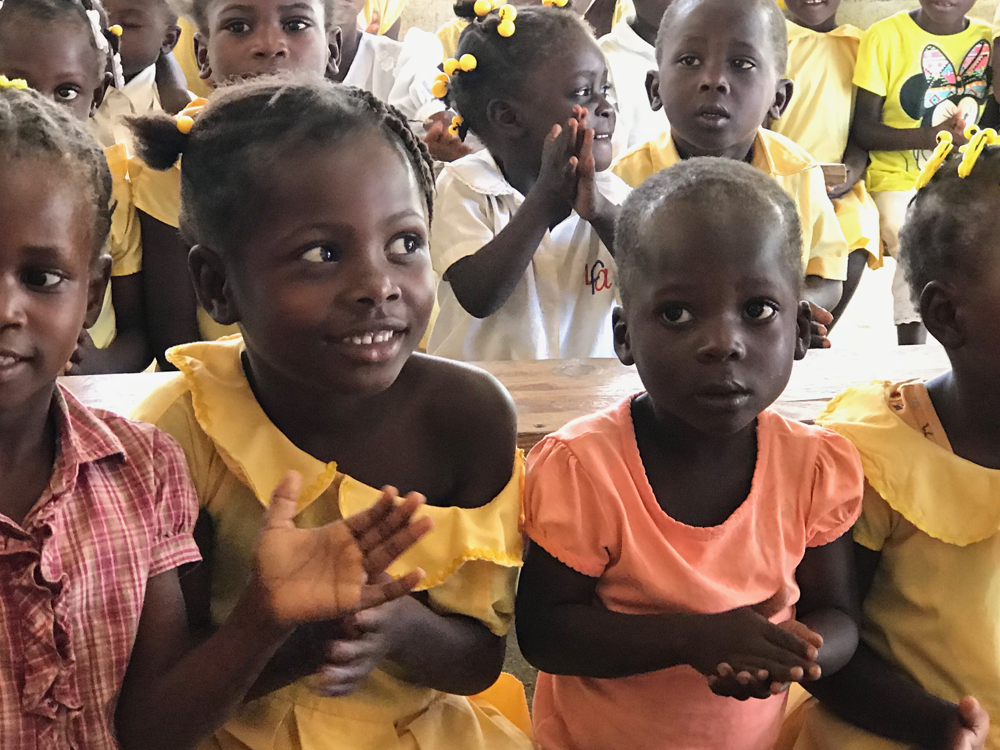
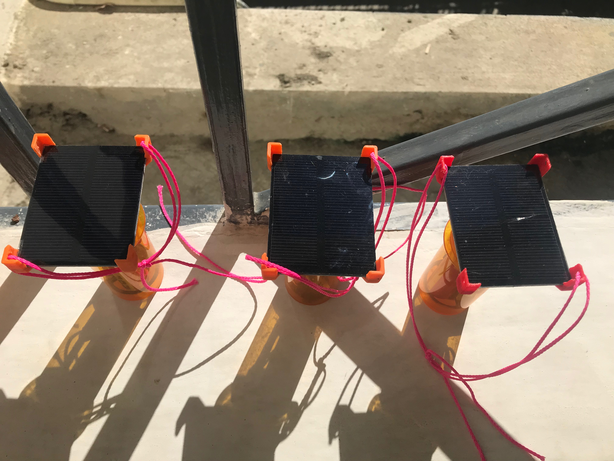

Solar Lights for Haiti
A Collaboration Professor Yang's Solar Light Project
 This projects was started under Professor Qimin Yang with funding from the Butler Community Engagement Fellowship. The project is dedicated to designing, improving, and increasing the affordability of off grid solar lighting for communities in Haiti that do not have access to an electrical grid. Students under Professor Yang developed prototypes during Summer 2017 that charges during the day and can be used at night. The prototypes were brought to communities in Haiti so that residents could have light at night.
 Following the trip to Haiti design modifications and improvements were brainstormed and members of the Harvey Mudd College chapter of EWB volunteered to help with the structural design and circuitry. Our members planned and applied different types of easily available materials such as soup cans and pringle lids in an attempt to decrease the cost of each unit production and increase portability when shipped. In the coming year further design improvements are being worked on to make the product one that can be produced on a large scale and requires little experience for individuals to learn to use. The hope is that we can work to increase the quality of life in communities in Haiti by giving them affordable solar powered portable lights.